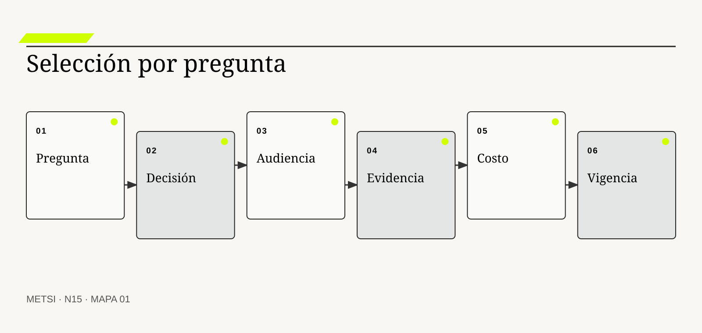
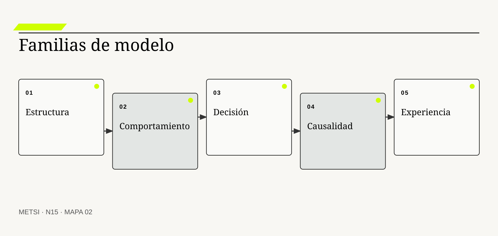
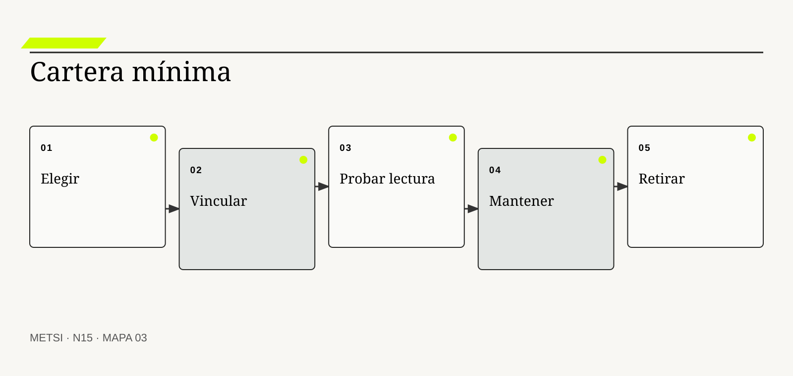

GB
George Box
Formuló la utilidad de modelos deliberadamente simplificados y sus límites.

Un modelo es una representación selectiva construida para una pregunta y una decisión.
Seleccionar modelos según pregunta, audiencia y costo
Ruta de lectura: problema, distinciones, decisiones, prueba, transferencia y preparación.
Nota. SIN NUM. identifica aparatos de orientación y referencia.
Seis voces para ampliar, contrastar y discutir N15.
Formuló la utilidad de modelos deliberadamente simplificados y sus límites.

Utilizó modelos conceptuales como dispositivos de aprendizaje en situaciones problemáticas.
Desarrolló modelado de dinámica de sistemas para explicar comportamiento y retroalimentación.
Propuso principios para evaluar notaciones visuales y carga cognitiva.

Creó C4 como conjunto selectivo de abstracciones y vistas de arquitectura de software.
Integró arquitectura empresarial y lenguaje ArchiMate en una práctica orientada a stakeholders.
N15 no resume estas fuentes ni las convierte en receta. Las pone en tensión para construir juicio profesional.
¿Qué representación conviene construir para responder una pregunta concreta sin producir más detalle, ambigüedad o mantenimiento del que la decisión justifica?
Una universidad debe decidir si puede abrir la inscripción a exámenes durante una semana de alta demanda. El equipo técnico prepara seis diagramas. Uno muestra servidores y bases. Otro enumera servicios. Un tercero contiene clases y relaciones. Un cuarto representa el flujo de inscripción. El quinto describe estados de una solicitud. El último exhibe un mapa de capacidades institucionales.
Cada diagrama es prolijo y, dentro de su notación, correcto. Dirección pregunta si una caída del sistema puede producir inscripciones dobles, qué estudiantes quedarían afectados y quién puede suspender el proceso. La reunión dedica veinte minutos a explicar símbolos. Nadie puede responder con el conjunto presentado.
El problema no es que falte un diagrama “completo”. Las preguntas mezclan estructura, transición, proceso, riesgo, actores y autoridad. Cada modelo recorta algunas relaciones y deja otras fuera. El equipo construyó representaciones desde herramientas disponibles, no desde decisiones pendientes.
Una desarrolladora propone agregar todas las piezas al diagrama de arquitectura. Incorpora estudiantes, reglas, colas, estados, bases, áreas, riesgos y responsables. El resultado ocupa una pared. Cuanto más completo parece, menos se puede leer. Las líneas cruzan niveles de abstracción; una caja puede significar aplicación, oficina o función. La totalidad visual produce una ilusión de comprensión.
El equipo reinicia con tres preguntas. Para conocer si dos comandos pueden comprometer la misma vacante, utiliza una transición de estado con invariante y concurrencia. Para ver qué grupos encuentran barreras antes de enviar el comando, construye un mapa de experiencia y actores. Para decidir quién suspende, representa autoridad, umbral y escalamiento. La arquitectura técnica queda como apoyo para localizar componentes afectados.
Los cuatro modelos no cuentan historias idénticas. La vista de experiencia comienza antes que el sistema. La transición termina al aceptar o rechazar. La arquitectura muestra componentes persistentes. La autoridad atraviesa áreas. La diferencia no es defecto: cada vista responde una pregunta.
El equipo agrega a cada modelo propósito, audiencia, alcance, fecha, fuentes, supuestos y decisión. También registra costo de mantenerlo. El diagrama de componentes puede generarse desde código y actualizarse con frecuencia. El mapa de autoridad necesita revisión cuando cambia una norma. El recorrido de experiencia requiere nueva evidencia si se modifica el canal.
La solución no consiste en producir modelos para cada aspecto. Se selecciona un conjunto mínimo capaz de responder preguntas y descubrir contradicciones. Si una representación no cambia una decisión, comunica algo necesario ni reduce riesgo, no se construye. Si dos vistas repiten lo mismo para la misma audiencia, se combinan o una se elimina.
La discusión revela además una asimetría. Quienes diseñaron los diagramas conocen el contexto y completan mentalmente relaciones ausentes. Dirección sólo recibe el artefacto. Cuando pregunta por una flecha, el autor agrega una explicación oral que nunca quedará disponible para la siguiente persona. El costo de interpretación estaba escondido en la reunión.
El equipo incorpora una prueba sin autor presente. Entrega cada vista con una pregunta y un escenario. Registra qué entiende la audiencia, qué confunde y qué no puede decidir. Algunas láminas técnicamente correctas fallan porque mezclan tiempo actual y futuro. Otras mejoran con una etiqueta, no con más detalle.
Durante la prueba, dirección comprende por qué disponibilidad técnica y capacidad institucional no son equivalentes. El área académica detecta que el criterio de suspensión no tiene autoridad suplente. Desarrollo localiza dónde implementar control de versión. El modelo funciona porque permite actuar y porque sus límites permanecen visibles.
Esta lectura estudia la selección de modelos. Modelar es simplificar con propósito. La calidad no depende de cantidad de elementos ni prestigio de la notación, sino de la relación entre pregunta, audiencia, evidencia, decisión, costo y vigencia.
HH-14 reconstruyó el check-in de principio a fin. En una reunión, Operaciones quiere ampliar ese mapa para incluir todas las tareas. Tecnología propone reemplazarlo por arquitectura. Comercial pide un customer journey. Dirección solicita un tablero de indicadores. Cada área busca volver central la representación que conoce.
El mapa de proceso muestra colas y handoffs, pero no explica componentes ni datos. La arquitectura ubica PMS, integrador y cerradura, pero no muestra espera del huésped. El journey conserva experiencia y puede ocultar reglas. El tablero resume resultados y no reconstruye mecanismos.
HH-15 no elegirá un ganador universal. Construirá una cartera mínima de modelos vinculados por conceptos estables: reserva, habitación, huésped, promesa, asignación y excepción. Cada vista tendrá pregunta, audiencia, decisión, alcance, evidencia, costo y fecha de revisión.
El equipo formula un criterio de salida. La cartera estará lista cuando permita decidir el piloto de validación previa, localizar impactos y explicar límites a Operaciones, Tecnología, Comercial y Recepción. No necesita representar nómina, compras ni cada tabla del PMS. El propósito protege la frontera contra la expansión permanente.
Un modelo es una representación selectiva construida para una pregunta y una decisión. Su valor proviene tanto de lo que incluye como de lo que excluye. Un modelo más detallado no es necesariamente mejor; puede mezclar niveles, aumentar carga cognitiva y exigir mantenimiento sin mejorar juicio.
La selección debe considerar objeto, relaciones, dinámica, audiencia, evidencia, notación, costo y vigencia. Diferentes modelos pueden ser simultáneamente válidos porque responden preguntas distintas. La coherencia no exige identidad, sino conceptos y límites compatibles.
Una cartera mínima supera al modelo total. Combina sólo las vistas necesarias, conserva trazabilidad y declara contradicciones. La notación sirve al razonamiento; no lo reemplaza.
N14 utilizó un mapa de proceso porque necesitaba secuencia, handoffs, colas y excepciones. HH-14 dejó además preguntas sobre arquitectura, datos, estados, actores y decisiones que el proceso no representa con precisión.
N15 convierte esa limitación en criterio. No vuelve a reconstruir el flujo ni compara todavía coherencia entre ciclos de vida, tarea de N16. Selecciona qué modelos vale la pena construir y cómo justificar el costo de cada uno.
El producto será HH-15, cartera mínima de modelos. Recibe preguntas abiertas de HH-14 y asigna a cada una una representación, audiencia, decisión, evidencia, nivel, costo, vigencia y relación con otras vistas.

Un modelo es una representación selectiva construida para una pregunta y una decisión.

Un modelo conserva ciertas propiedades de un objeto para comprender, comunicar, predecir o decidir. George Box recordó que los modelos son incorrectos como reproducciones completas y útiles cuando su simplificación sirve. La frase no autoriza arbitrariedad: obliga a explicar para qué es útil y dónde deja de serlo.
Un mapa de subte omite distancias y edificios para mostrar conexiones. Resulta excelente para elegir combinación y malo para calcular una caminata. Agregar calles puede empeorar su función principal.
En sistemas, una entidad relación selecciona estructura de datos; una máquina de estados, transiciones; un modelo causal, mecanismos; un proceso, secuencia y responsabilidad. Llamarlos “modelos del sistema” no los vuelve intercambiables.
La evidencia de utilidad es una decisión mejor, una contradicción descubierta o una comunicación comprobable. La belleza visual puede ayudar a leer y no sustituye ese resultado.
La prueba negativa también importa. Si retirar una relación no cambia ninguna conclusión, quizá no era necesaria. Si un caso límite exige una pieza ausente, el recorte fue excesivo. El modelo se calibra por sensibilidad a diferencias relevantes.
La pregunta determina qué relaciones deben ser visibles. “¿Dónde espera el huésped?” requiere tiempo y recorrido. “¿Qué componente puede duplicar una asignación?” requiere frontera técnica y transición. “¿Quién absorbe el daño?” requiere actores, poder y reparación.
La decisión define suficiente detalle. Para elegir entre dos canales puede bastar un flujo comparado. Para autorizar acceso se necesitan reglas, estados y autoridad. Modelar sin decisión conduce a acumular información por precaución.
La carga de prueba también cambia. Un modelo exploratorio puede contener hipótesis marcadas. Un modelo usado para comprometer presupuesto necesita procedencia, supuestos y revisión. HH-11 aporta fuerza de evidencia; N15 la vincula con el uso del modelo.
Una buena consigna completa tres frases: necesitamos decidir, necesitamos ver y podemos ignorar por ahora. La tercera protege el recorte.
La pregunta debe poder refutarse o cerrarse provisionalmente. “Modelar el sistema” no tiene condición de suficiencia. “Determinar si la validación previa puede excluir una doble asignación” permite reconocer qué evidencia y representación alcanzan.
ISO/IEC/IEEE 42010:2022 distingue arquitectura de descripción de arquitectura y organiza stakeholders, concerns, viewpoints y vistas. Un viewpoint especifica convenciones para construir una vista que responde preocupaciones de ciertas audiencias.
La contribución es metodológica: no existe una vista neutral para todos. Seguridad necesita límites de confianza. Operaciones, dependencias y recuperación. Dirección, capacidades y riesgos. Desarrollo, estructura suficiente para cambiar.
La audiencia no determina verdad por jerarquía. Una vista ejecutiva no debe ocultar incertidumbre para parecer simple. Una vista técnica no debe usar detalle para excluir. Se adapta lenguaje y densidad, no la evidencia central.
La prueba consiste en pedir a la audiencia que explique qué decisión tomaría. Si sólo puede repetir cajas, la vista no cumplió.
También se registran preocupaciones en tensión. Seguridad puede pedir más control; experiencia, menos fricción; operación, reparación rápida. Una vista puede mostrar el conflicto sin resolverlo. Ocultarlo para alcanzar consenso produce una descripción políticamente cómoda y metodológicamente débil.
Alcance define qué sistema, período y frontera entra. Nivel define tipo de elemento: organización, capacidad, sistema, contenedor, componente o código. Resolución define cuánto detalle se muestra dentro de ese nivel.
Mezclar niveles crea relaciones ambiguas. Una flecha entre “Recepción” y “API” puede significar uso, ownership, mensaje o dependencia. Separar vistas o etiquetar relaciones resta espectacularidad y agrega significado.
El modelo C4 de Simon Brown propone niveles jerárquicos de contexto, contenedores, componentes y código. Su sitio oficial aclara que no todos son necesarios y que contexto y contenedores suelen alcanzar. Esa selectividad coincide con N15.
Acercar el zoom no corrige una frontera equivocada. Un diagrama de código perfecto no explica una promesa comercial. Primero se elige pregunta; luego nivel.
La resolución puede variar dentro de una cartera, no dentro de cada símbolo. Un contexto general enlaza una vista detallada de la zona crítica. Esa navegación conserva orientación y evita que toda página cargue el máximo detalle disponible.
Un modelo puede describir situación actual, historia, escenario futuro o transición. Mezclarlos sin marca produce contradicción aparente. “El PMS envía a la cerradura” puede ser vigente, propuesto o deseado.
Toda vista necesita fecha o evento de validez, fuente y responsable. Un modelo sin vigencia se convierte en documento ceremonial. La actualización puede ser automática, periódica o disparada por cambio.
La frecuencia depende de volatilidad y consecuencia. Arquitectura generada desde código puede renovarse en cada despliegue. Autoridad normativa cambia menos, pero exige revisión formal. Un journey requiere nueva investigación cuando cambia la experiencia.
El costo de desactualización se compara con el de mantener. Si nadie puede sostener una vista detallada, conviene reducirla o generarla.
La versión debe vincularse con la decisión que utilizó el modelo. Corregir una vista después no reescribe lo que el equipo sabía. La trazabilidad conserva por qué una decisión anterior era defendible y qué evidencia posterior obliga a revisarla.
Una notación define elementos, relaciones y reglas de lectura. UML 2.5.1 ofrece múltiples diagramas; BPMN 2.0.2, semántica para procesos. ArchiMate 3.2 relaciona capas y aspectos de arquitectura empresarial. Ninguna es mejor en abstracto.
Daniel Moody propone principios para evaluar notaciones visuales, como discriminación perceptual, transparencia semántica, complejidad y manejo de diferencias cognitivas. Una notación puede ser formal y difícil para la audiencia.
Las cajas y flechas libres permiten velocidad y crean ambigüedad si no tienen leyenda. Una notación rigurosa puede exceder la decisión. El criterio combina precisión necesaria y costo de comprensión.
La relación debe etiquetarse con verbo. “PMS informa disponibilidad a Comercial” explica más que una flecha. Formas y colores sólo se usan si conservan significado estable.
La notación también debe ser accesible. Depender sólo del color, utilizar íconos sin texto o saturar cruces excluye lectores y favorece interpretaciones. Una explicación textual y un orden de lectura permiten reconstruir el argumento fuera del dibujo.
El equipo identifica cuatro decisiones. Reducir espera requiere flujo end-to-end. Evitar doble asignación requiere estados e invariantes. Evaluar dependencia del integrador requiere arquitectura y contratos. Reparar promesas requiere actores y autoridad.
Construye cuatro vistas pequeñas vinculadas por identificadores. El proceso no incluye tablas. La arquitectura no intenta narrar toda la experiencia. La matriz de autoridad no duplica cada mensaje. Cada una declara alcance.
Al compararlas surge una ausencia: ninguna representa qué evidencia recibe el huésped durante un estado ambiguo. Se agrega una vista de experiencia acotada, no un journey total.
La cartera aumenta a cinco modelos porque una pregunta lo exige. El límite sigue siendo utilidad, no un número prefijado.
El equipo registra además una correspondencia entre vistas. “Habitación asignable” en proceso debe referir al estado definido en HH-12. Si una vista usa “disponible” con otro sentido, lo declara. La selección prepara coherencia sin forzar identidad visual.
Antes de aceptar la quinta vista, el equipo intenta resolver la ausencia mediante una anotación en el proceso. La prueba con huéspedes muestra que no alcanza: la pregunta trata percepción, acceso y reparación. El nuevo modelo no aparece por preferencia de Diseño, sino por evidencia de una decisión no cubierta.
Michael Jackson propone problem frames para separar fenómenos del mundo, requisitos y máquina. La distinción impide que la estructura de la solución capture demasiado pronto la pregunta. Un modelo de aplicaciones existentes puede hacer parecer inevitable conservarlas.
Antes de diseñar, se representa el dominio y la discrepancia: dos promesas sobre una vacante, una regla sin autoridad suplente o una persona bloqueada antes del formulario. Luego se agregan componentes necesarios. La dirección del razonamiento va del problema a la solución, aunque la evidencia técnica informe restricciones.
El modelo del problema no es neutral. También selecciona frontera y lenguaje. Se contrasta con actores y episodios. Su utilidad aparece cuando permite comparar alternativas que una arquitectura actual ocultaba.
La condición de borde es el cambio técnico acotado. Si la pregunta consiste en localizar un error dentro de una función, un modelo de código puede ser suficiente. La regla no prohíbe comenzar cerca de la solución; exige justificarlo.

Los modelos de estructura muestran elementos relativamente persistentes y relaciones: datos, componentes, capacidades, organización o despliegue. Responden qué existe, cómo se compone y de qué depende.
Una entidad relación ayuda a decidir integridad y correspondencia. C4 comunica estructura de software a distintos niveles. ArchiMate conecta negocio, aplicaciones y tecnología. El Business Architecture Core Metamodel de OMG, publicado en 2024, ofrece conceptos para arquitectura de negocio.
La frontera es crucial. Un inventario de aplicaciones no es arquitectura si no muestra relaciones relevantes. Un organigrama no es modelo de autoridad si confunde cargo con decisión.
La evidencia suele provenir de repositorios, configuraciones, entrevistas y normas. La actualización automática reduce deriva técnica y no valida significado de negocio.
Marc Lankhorst vincula arquitectura empresarial con stakeholders y coherencia entre dominios. Esa amplitud ayuda cuando una decisión cruza capacidades y tecnología. También puede exceder un problema local. El modelo estructural debe declarar si representa dependencia, composición, propiedad, uso o flujo; una línea genérica impide decidir impacto.
Máquinas de estados, secuencias, procesos y simulaciones muestran cambio. Responden qué ocurre, en qué orden, bajo qué condición y con qué demora.
Un modelo de estados protege transiciones de una entidad. Un BPMN representa coordinación. Un diagrama de secuencia localiza intercambios. Una simulación explora capacidad y variabilidad. Elegir uno depende de la pregunta.
No se debe forzar comportamiento dentro de una estructura estática mediante flechas ambiguas. Tampoco llenar un proceso con cada mensaje técnico. Se vinculan vistas cuando el detalle cambia audiencia.
La evidencia necesita episodios y tiempos. El camino normativo puede coexistir con el observado si se distinguen.
Los modelos de comportamiento deben tratar alternativas y excepciones. Una secuencia única parece predecir lo que apenas prescribe. Una simulación agrega supuestos sobre llegadas y capacidad; si no se documentan, produce precisión aparente. La prueba compara el comportamiento modelado con casos ordinarios y adversos.
El tiempo puede representarse como orden, duración, demora o frecuencia. Un diagrama de secuencia muestra intercambios y no necesariamente espera de personas. Una simulación puede estimar distribución y no explicar autoridad. La decisión define qué dimensión temporal se necesita.
Una tabla de decisión representa combinaciones de condiciones y resultados. Un árbol muestra ramificación. Un modelo causal expresa mecanismos, retroalimentación y demoras. Un argumento vincula afirmación, evidencia y rivales.
John Sterman muestra que los modelos de dinámica de sistemas permiten explorar cómo estructura y feedback generan comportamiento. Peter Checkland utiliza modelos conceptuales en Soft Systems Methodology como dispositivos para aprender sobre situaciones, no como copias de la realidad.
Estas familias responden por qué y qué pasaría si, preguntas que un flujo puede no resolver. Su riesgo es convertir hipótesis en causalidad establecida. Cada relación declara evidencia y alternativa.
La selección depende de reversibilidad. Para explorar puede bastar un modelo cualitativo. Para automatizar una decisión se exige formalización, prueba y autoridad.
Un lazo causal no demuestra magnitud ni demora. Una tabla de decisión no explica cómo cambian sus entradas. Combinar vistas puede ser necesario, pero cada vínculo conserva estatus: evidencia, hipótesis o regla. La representación se debilita cuando transforma asociación observada en mecanismo.
Journey, blueprint de servicio, mapa de actores y escenario conservan lo que vive una persona y cómo se relaciona con trabajo interno. Responden dónde aparece fricción, información, emoción, exclusión o reparación.
No reemplazan proceso ni arquitectura. Una línea emocional no prueba causa. Una persona ficticia no sustituye evidencia. Su valor consiste en mantener la promesa y las perspectivas que los modelos técnicos excluyen.
La evidencia proviene de observación, entrevistas, accesibilidad y episodios. N05 y N09 aportan criterios de poder y participación. La audiencia incluye diseño, producto, operaciones y actores afectados.
El límite se alcanza cuando el modelo estetiza experiencia o habla en nombre de quien no participó.
Una foto de persona o una curva emocional no agrega evidencia por sí misma. Se necesita episodio, cita autorizada, patrón o condición. El modelo puede declarar “perspectiva no relevada” en lugar de inventar una voz. Esa ausencia es información para decidir investigación.
La representación debe separar experiencia observada de interpretación del equipo. “Esperó cuarenta minutos” es evidencia temporal; “se sintió abandonada” requiere relato o inferencia marcada. La precisión protege la voz en lugar de volverla decorativa.
Una misma pregunta puede requerir distintas vistas por audiencia. Dirección necesita riesgo y decisión; desarrollo, interfaces y reglas; operación, excepciones y señales. La traducción debe conservar conceptos y cambiar resolución.
Crear una copia manual para cada audiencia aumenta inconsistencia. Conviene mantener un modelo base cuando existe semántica común y derivar vistas. No todo puede centralizarse: relatos y normas tienen fuentes distintas.
La traducción se prueba con escenarios. Cada audiencia localiza la misma reserva, transición o excepción. Si los nombres cambian sin correspondencia, la cartera fragmenta comprensión.
La simplificación debe declarar lo omitido. “Vista ejecutiva” no autoriza esconder dependencia crítica.
La traducción incluye orden de preguntas. Una persona directiva puede comenzar por consecuencia y abrir evidencia; desarrollo, por componente y contrato. Dos recorridos pueden usar la misma base sin repetir documentos. Diseñar navegación forma parte de la comunicación del modelo.
La traducción también puede revelar desacuerdo. Si Tecnología llama “éxito” a la recepción del comando y Comercial a la confirmación del huésped, no se corrige sólo con vocabulario. Se revisan evento, alcance y consecuencia. La cartera funciona como lugar de negociación semántica.
El costo incluye investigar, construir, explicar, validar, mantener, gobernar y retirar. También incluye decisiones equivocadas por ambigüedad o desactualización.
Un diagrama generado puede ser barato de actualizar y caro de comprender. Un taller participativo puede ser costoso y revelar una frontera decisiva. La comparación utiliza consecuencia evitada, frecuencia de uso y vida esperada.
La deuda de modelo aparece cuando una representación continúa circulando sin responsable ni fecha. Puede ser peor que no tenerla porque ofrece confianza falsa. Se necesita política de revisión y retiro.
El modelo mínimo no es el más pequeño. Es el menor conjunto que responde la pregunta con evidencia y permite descubrir límites relevantes.
El costo de oportunidad cuenta. Mantener una vista que nadie utiliza desplaza observación, pruebas o reparación. La revisión pregunta frecuencia de consulta y decisiones efectivamente influenciadas. Un modelo puede conservar valor histórico y salir de la cartera operativa.
También existe costo de dependencia de herramienta. Un formato propietario puede dificultar revisión, versión y acceso. La elección considera exportación, búsqueda, accesibilidad y capacidad de reconstrucción, no sólo facilidad inicial de dibujo.
En 2026, herramientas de inteligencia artificial pueden inferir diagramas desde código, logs o texto y traducir entre notaciones. Reducen costo de producción y pueden multiplicar modelos sin propósito.
Una representación generada hereda sesgos y ausencias de la fuente. Desde código omitirá trabajo manual. Desde entrevistas puede inventar continuidad. Desde logs puede confundir frecuencia con importancia.
La persona responsable debe verificar elementos, relaciones, nivel, fecha y evidencia. También debe decidir si el modelo merecía existir. La velocidad no elimina costo de revisión ni mantenimiento.
La IA resulta valiosa para explorar variantes, detectar inconsistencias de nombres y generar vistas desde un modelo estructurado. No adquiere autoridad para declarar la arquitectura real.
La verificación no puede consistir en preguntar al mismo modelo si su salida es correcta. Se contrasta con fuentes y personas responsables. Cuando la herramienta resume una norma o infiere una relación, el artefacto conserva referencia y nivel de confianza. La rapidez permite iterar; no reduce la carga de prueba del uso.
Hotel Horizonte reúne diecisiete diagramas. Cinco son copias de arquitectura con nombres distintos. Tres procesos describen versiones pasadas. Dos journeys no tienen fuentes. El resto responde preguntas vigentes.
El equipo registra uso, audiencia, decisión y responsable. Retira seis, combina cuatro, actualiza tres y conserva cuatro. Agrega vínculos entre reserva, habitación, asignación y excepción.
La reducción no pierde conocimiento porque conserva historial y motivo. Disminuye contradicciones accidentales y libera esfuerzo para validar las vistas que sí influyen.
Una vista retirada puede reabrirse si vuelve la pregunta. El retiro no borra procedencia.
El proceso detecta una dependencia cultural: cada equipo conserva “su” mapa como territorio. La cartera cambia ownership por responsabilidad de evidencia. Las áreas siguen aportando conocimiento, pero ninguna vista adquiere verdad por pertenencia. Una revisión conjunta resuelve nombres y retira duplicados.
Los tres modelos actualizados reciben fecha y caso de prueba. Si no pasan, no vuelven al circuito decisional. Esta regla evita que corregir metadatos se confunda con recuperar utilidad. La cartera deja de medir cantidad y comienza a medir cobertura confiable.
Antes de construir, se aplican cinco filtros. La pregunta debe estar abierta. La decisión debe tener consecuencia. La representación debe mejorar algo frente a texto, consulta o prueba directa. Debe existir evidencia accesible. El costo debe ser proporcional a uso y riesgo.
Después de construir se aplica descarte. Si la audiencia no puede leer, si no cambia la decisión, si duplica otra vista, si no puede mantenerse o si su incertidumbre excede el uso, se corrige o retira. Un modelo no se conserva para justificar el trabajo invertido.
La suficiencia es provisional. Una vista puede alcanzar para explorar y no para autorizar. Se etiqueta su nivel de compromiso. Esto evita que un boceto de taller circule meses después como arquitectura aprobada.
La evidencia de descarte se registra brevemente. “Sin uso” es menos útil que “la consulta automatizada responde la misma pregunta con fuente vigente”. El historial ayuda a no recrear modelos por olvido.

Cada modelo se justifica mediante diez decisiones:
La ficha puede concluir “no construir”. Esa es una decisión válida si una pregunta ya está respondida o el costo excede consecuencia.
También puede concluir “construir para una sola decisión”. No toda vista necesita vida permanente. Un modelo efímero de taller puede cumplir, conservarse como evidencia y retirarse del conjunto operativo. La temporalidad reduce deuda sin despreciar aprendizaje.
Se listan preguntas en filas y modelos candidatos en columnas. Cada cruce indica cobertura fuerte, parcial o nula, costo y audiencia. La matriz evita elegir por costumbre.
Una pregunta puede requerir dos modelos complementarios. Si necesita cinco, quizá esté mal formulada o exija un estudio. Una vista que cubre todo parcialmente puede no cubrir nada con suficiente precisión.
La comparación incorpora alternativas no visuales: consulta, tabla, prototipo, relato o prueba. No toda pregunta necesita diagrama.
La matriz se revisa al cambiar decisión. Un modelo útil para diagnosticar puede no servir para operar.
Se agrega una columna de riesgo de omisión. Un modelo barato que cubre parcialmente una pregunta crítica puede ser peor que una investigación costosa. Otra columna registra dependencia de fuente, para no elegir una vista que no podrá actualizarse.
La matriz no produce un puntaje automático. Las coberturas requieren argumento. Una suma podría premiar una vista amplia y superficial. El equipo conserva comparación cualitativa y explicita el criterio que inclina la decisión.
La audiencia recibe un escenario sin explicación del autor. Debe identificar alcance, elementos, relaciones, supuestos y decisión. Se observa dónde interpreta distinto.
Luego se introduce un caso límite: mensaje tardío, huésped con accesibilidad, servicio externo caído o norma modificada. El modelo debe permitir localizar la pregunta o declarar que queda fuera.
Una lectura idéntica no siempre es necesaria. Sí debe haber acuerdo sobre significado operativo de los elementos usados para decidir. La leyenda y las etiquetas forman parte de la prueba.
Si el autor debe explicar cada flecha oralmente, el modelo todavía no es transferible.
La prueba registra desacuerdos, no sólo tasa de acierto. Dos interpretaciones pueden revelar término polisémico o concern en tensión. Se corrige etiqueta, separa vista o documenta diferencia legítima. El propósito es comunicación defendible, no unanimidad artificial.
Una segunda ronda verifica aprendizaje. Si la audiencia puede usar el modelo sólo después de una capacitación extensa, ese costo se registra. En decisiones infrecuentes y críticas puede justificarse; en operación cotidiana, probablemente no.
Las vistas se vinculan mediante identificadores y glosario, no mediante una lámina gigantesca. Reserva R73 puede aparecer en proceso, estado y arquitectura bajo el mismo concepto.
Cada relación registra fuente o hipótesis. Un repositorio permite encontrar vistas afectadas por un cambio. La trazabilidad no implica sincronía automática de toda representación.
Se define una vista índice liviana que muestra preguntas, modelos y vínculos. No pretende representar el sistema. Ayuda a navegar la cartera.
La coherencia entre modelos se trabajará en N16. N15 sólo asegura que las comparaciones sean posibles.
Los vínculos deben poder recorrerse en ambas direcciones. Desde una decisión se encuentran vistas y evidencia; desde un elemento, decisiones afectadas. Esto permite estimar impacto de un cambio sin concentrar toda información en una lámina.
La trazabilidad se mantiene en el nivel necesario. Relacionar cada píxel con una fuente sería inviable. Se vinculan afirmaciones, elementos y relaciones cuya modificación cambia una decisión. El resto puede conservar procedencia por bloque.
El hotel debe decidir si incorpora validación digital previa. Selecciona cinco representaciones: proceso actual y propuesto, journey acotado, estados de identidad, arquitectura de integración y matriz de autoridad.
Cada una responde una pregunta distinta. Se excluyen modelo de datos completo, organigrama y mapa empresarial porque no cambian la decisión inmediata. Se conserva un enlace a fuentes.
La prueba con un caso ordinario y otro accesible descubre que el proceso propuesto reduce mostrador y puede bloquear a quien no completa el canal digital. El journey hace visible daño; la matriz, autoridad de excepción; la arquitectura, dependencia de proveedor.
La decisión cambia: validación previa será opcional, con asistencia y ruta de excepción. La cartera justificó su costo porque reveló una condición que un único proceso ocultaba.
El hotel establece caducidad. La vista de proceso se revisa después del piloto; el modelo de estados, cuando cambia la regla; la arquitectura, en cada modificación de integración; la matriz de autoridad, al rotar roles. La utilidad queda vinculada con mantenimiento real.
Un banco evalúa una alerta automática. Arquitectura muestra flujo del modelo. Una tabla de decisión muestra umbrales. Un mapa de actores revela quién puede apelar. Un modelo causal explora cómo más bloqueos cambian conducta y datos futuros.
Ninguno basta solo. Tampoco se necesita modelar toda la entidad. La cartera se limita a decisión de bloquear, revisar o permitir, con evidencia y autoridad.
La transferencia muestra que el riesgo determina carga de prueba. Un modelo exploratorio no puede convertirse sin revisión en regla operacional.
El banco prueba la cartera con una alerta verdadera, una falsa y una apelación. Si el modelo de decisión explica el umbral pero no el camino de reparación, se agrega vínculo al proceso. La arquitectura no debe absorber esa ausencia mediante más cajas.
El ejemplo limita la automatización: una explicación técnica de score puede no explicar la decisión institucional. Se representan modelo predictivo, regla y autoridad como piezas distintas.
Una organización exige representar toda capacidad, proceso, aplicación, dato y tecnología en ArchiMate antes de aprobar cambios. El repositorio crece durante tres años. Muchas relaciones no tienen fuente; equipos actualizan para cumplir y consultan pizarras informales para decidir.
La exhaustividad creó costo, retraso y confianza falsa. El problema no es ArchiMate, sino ausencia de preguntas, audiencias y política de vigencia.
La organización reduce el núcleo, automatiza relaciones técnicas, retira vistas sin uso y exige evidencia en decisiones críticas. Un modelo menor se vuelve más gobernable y útil.
El contraejemplo limita la tesis: formalidad y cobertura no garantizan comprensión. La disciplina consiste en elegir y sostener.
El repositorio conserva una vista de paisaje para orientación y crea vistas focales por decisiones. Las relaciones sin fuente se eliminan o marcan. La reducción permite que los equipos detecten un cambio real en lugar de navegar inventario ornamental.
La excepción es una obligación regulatoria de documentación exhaustiva. Incluso allí se separa archivo de cumplimiento y vista decisional. Cumplir no exige forzar a toda audiencia a leer el mismo artefacto.
La plantilla disponible define el problema antes de formular la pregunta.
Mezclar niveles y preocupaciones aumenta ruido y oculta decisiones.
Reducir detalle no autoriza borrar incertidumbre, riesgo o dependencia.
Las relaciones quedan abiertas a interpretación.
La contradicción temporal parece inconsistencia.
La cartera deriva y acumula deuda de modelo.
La fuente omite trabajo, autoridad y experiencia.
La herramienta puede representar fuentes; propósito y consecuencia siguen bajo responsabilidad humana.
Retirar una vista sin uso puede aumentar integridad de la cartera.
El análisis de sistemas incluye decidir qué no modelar. Arquitectura, producto, operaciones, diseño, seguridad y dirección necesitan vistas distintas conectadas por conceptos estables.
Un profesional puede formular pregunta, audiencia y decisión antes de elegir notación; justificar alcance y resolución; evaluar costo total; probar lectura; y retirar representaciones que perdieron vigencia.
La documentación deja de ser archivo de entregables y se convierte en cartera gobernada. El éxito es que una persona pueda decidir y reconocer límites sin depender del autor.
La gobernanza asigna responsables de concepto además de archivos. Si “reserva confirmada” aparece en cinco vistas, su cambio semántico requiere coordinación. Esto no crea un comité para cada palabra: localiza términos cuyo desacuerdo cambia promesas.
La competencia profesional incluye decir que falta evidencia. Un modelo incompleto pero honesto puede orientar investigación. Completar huecos con supuestos invisibles produce una seguridad más peligrosa que la ausencia de dibujo.
La selección también ordena colaboración. Define quién aporta evidencia, quién valida significado, quién usa y quién mantiene. Esa distribución previene que el modelado sea una tarea aislada del analista y que las áreas sólo aprueben al final.
La evaluación de alternativas mejora porque cada representación expone un tipo de consecuencia. El proceso muestra desplazamiento de espera; la arquitectura, dependencia; el estado, transición imposible; la experiencia, barrera; la causalidad, efecto indirecto. Ninguna vista obtiene prioridad permanente. La pregunta determina cuál conduce y cuáles controlan puntos ciegos.
El profesional también puede detener la producción. Si la decisión es reversible, la evidencia débil y el costo de modelar alto, un experimento puede aprender más. Si la decisión compromete seguridad o derechos, la cartera necesita mayor precisión. Elegir no modelar todavía no equivale a improvisar: declara por qué otra forma de evidencia resulta más adecuada.
Esta capacidad evita dos extremos. El primero documenta todo antes de actuar. El segundo considera cualquier modelo como burocracia. METSI propone proporcionalidad: representar lo suficiente para que la acción sea defendible, sus límites sean visibles y la revisión pueda comenzar cuando cambie el contexto.
El resultado debe poder enseñarse y transferirse. Una cartera que sólo comprende quien la construyó sigue siendo dependencia personal. Registrar pregunta, audiencia, evidencia y prueba permite que otra persona revise el recorte, cuestione una omisión y actualice la representación sin empezar nuevamente ni aceptar el modelo por autoridad.
Un modelo simple puede democratizar comprensión y omitir una complejidad crítica. La prueba con casos límite ayuda a distinguir claridad de simplificación engañosa.
La participación amplía perspectivas y aumenta costo. No todas las personas intervienen en cada detalle, pero quienes absorben consecuencias deben tener una vía relevante.
La generación automática reduce deriva y puede privilegiar lo técnicamente observable. Los elementos sociales necesitan otras fuentes y responsabilidades.
Los estándares aportan lenguaje compartido y pueden imponer categorías ajenas al problema. Se adaptan con trazabilidad, no se obedecen como fin.
Finalmente, una cartera mínima no es estable para siempre. Cambian preguntas, sistemas y autoridad. El costo de revisión forma parte del diseño desde el inicio.
Existe tensión entre consistencia y autonomía. Un lenguaje común facilita impacto; una taxonomía central puede borrar particularidades. Se gobiernan conceptos compartidos y se permiten vistas locales con correspondencia explícita.
También existe tensión entre transparencia y seguridad. Una vista amplia de dependencias puede revelar información sensible. La audiencia y el acceso se diseñan sin usar confidencialidad como excusa para ocultar riesgos a quienes deben decidir.

Un modelo simple puede democratizar comprensión y omitir una complejidad crítica.
HH-15 deja modelos con propósito, alcance, evidencia, vigencia y vínculos. Al compararlos aparecerán nombres incompatibles, fronteras distintas y estados que no coinciden. Algunas diferencias serán errores; otras, perspectivas o tiempos legítimos.
N16 trabajará coherencia y contradicciones productivas entre modelos y ciclos de vida. No agregará modelos por reflejo. Utilizará las tensiones para revisar supuestos y cerrar el Bloque C.
Un modelo es una simplificación deliberada. Se evalúa por pregunta, decisión, audiencia, evidencia, alcance, resolución, costo y vigencia. Más detalle puede reducir utilidad.
Estructura, comportamiento, decisión, causalidad y experiencia requieren familias diferentes. Notaciones como UML, BPMN, ArchiMate o C4 ofrecen semánticas y límites. Ninguna decide qué importa.
Una cartera mínima vincula vistas sin fabricar un modelo total. Cada representación debe pasar una prueba de lectura y decisión. También puede retirarse.
HH-15 organiza diez decisiones desde pregunta hasta utilidad. Prepara comparaciones para N16, donde la coherencia no consistirá en uniformar, sino en explicar acuerdos y contradicciones.
Alcance: frontera espacial, organizacional y temporal de una representación.
Audiencia: personas que deben interpretar, discutir, decidir o mantener un modelo.
Cartera de modelos: conjunto gobernado de representaciones y sus relaciones.
Concern: preocupación o interés relevante de un stakeholder según ISO/IEC/IEEE 42010.
Deuda de modelo: costo y riesgo acumulados por representaciones desactualizadas o ambiguas.
Familia de modelo: tipo de representación orientado a estructura, comportamiento, decisión, causalidad o experiencia.
Modelo: representación selectiva construida con un propósito.
Notación: convenciones que definen elementos, relaciones y reglas de lectura.
Resolución: grado de detalle dentro de un nivel y alcance.
Trazabilidad: vínculo entre modelo, fuente, decisión y otras vistas.
Viewpoint: convenciones para construir vistas que atienden preocupaciones de una audiencia.
Vista: expresión de un sistema desde un viewpoint y para ciertas preocupaciones.
Vigencia: período o condición durante la cual una representación puede utilizarse.
Para el encuentro, seleccionar una decisión conocida. Formular tres preguntas y comparar al menos cuatro familias de representación. Justificar una cartera mínima mediante audiencia, evidencia, resolución, costo, vigencia y prueba de utilidad.